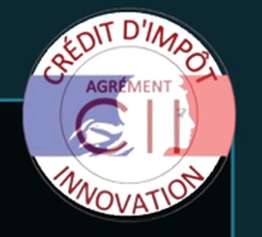

Nos solutions s'appuient sur un socle de compétences techniques structuré en six grandes familles, au service de vos projets Data & IA.
Dans le but de minimiser le risque, nous proposons un accompagnement complet au développement de solutions IA sur mesure, structuré en 6 étapes successives. Chaque projet avance par validation à chaque étape, vous permettant de décider librement de poursuivre ou non, sans engagement sur la totalité du parcours dès le départ.
Diagnostic
Évaluation des opportunités
POC
Preuve de concept
MVP
Mise en production de la première version
Grade A
Produit final
Maintenance
Intégration d'une technologie améliorée
Mise à niveau
Adaptation aux évolutions du marché
Nous bénéficions de l'agrément Crédit d'Impôt Innovation (CII). Pour les projets éligibles, une partie des dépenses de développement peut être prise en charge, réduisant ainsi votre investissement.

Notre équipe réunit des experts issus d'établissements de référence, titulaires de Masters et doctorats. Cette diversité de compétences nous permet de concevoir des solutions Data & IA robustes et adaptées à vos enjeux métier.
Voir notre équipe →Nos clients nous font confiance pour concevoir des solutions Data & IA sur mesure dans des secteurs variés.
Cette diversité témoigne de notre capacité à répondre aux enjeux spécifiques de chaque organisation.
Voir nos cas d'usage →Nous investissons dans la recherche appliquée au sein de notre Laboratoire G2M, afin d'explorer les technologies d'intelligence artificielle et de développer des solutions innovantes pour nos clients.
Découvrir le Laboratoire G2M →Une fois le diagnostic réalisé, nous transformons les recommandations en une solution Data & IA entièrement sur mesure. Chaque développement est conçu selon vos besoins, vos contraintes et vos objectifs métier, afin de s'intégrer naturellement à vos processus et de créer une valeur durable.


Concevoir et déployer les solutions

Vous avez des questions sur la partie développement sur mesure ? Retrouvez ici les réponses aux interrogations les plus fréquentes pour vous aider à mieux comprendre notre démarche.
Le développement sur mesure s'adresse aux entreprises de toutes tailles souhaitant répondre à une problématique métier spécifique, automatiser certains processus ou exploiter davantage leurs données grâce à une solution Data & IA adaptée à leur activité.
Avant d'engager un développement complet, G2M étudie votre besoin, vos objectifs, vos contraintes ainsi que la faisabilité technique du projet. Cette première analyse permet de définir une approche adaptée et de s'assurer que la solution envisagée répond à un besoin concret.
La durée d'un projet dépend de sa complexité, des fonctionnalités attendues, des données disponibles et du niveau d'intégration nécessaire. Un calendrier prévisionnel est défini avec vous en fonction du périmètre et des objectifs du projet.
Le coût varie selon les besoins de votre entreprise, la complexité de la solution, les fonctionnalités à développer et les technologies mobilisées. Une estimation personnalisée est réalisée après l'analyse du projet et la définition de son périmètre.
Oui. G2M accompagne vos équipes afin de faciliter la prise en main et l'intégration de la solution dans leurs usages quotidiens. L'objectif est de favoriser son adoption et de permettre une utilisation adaptée aux besoins de votre entreprise.
Parlons-en. En 30 minutes, on évalue ensemble si une solution IA a du sens pour votre cas.
Contactez nous